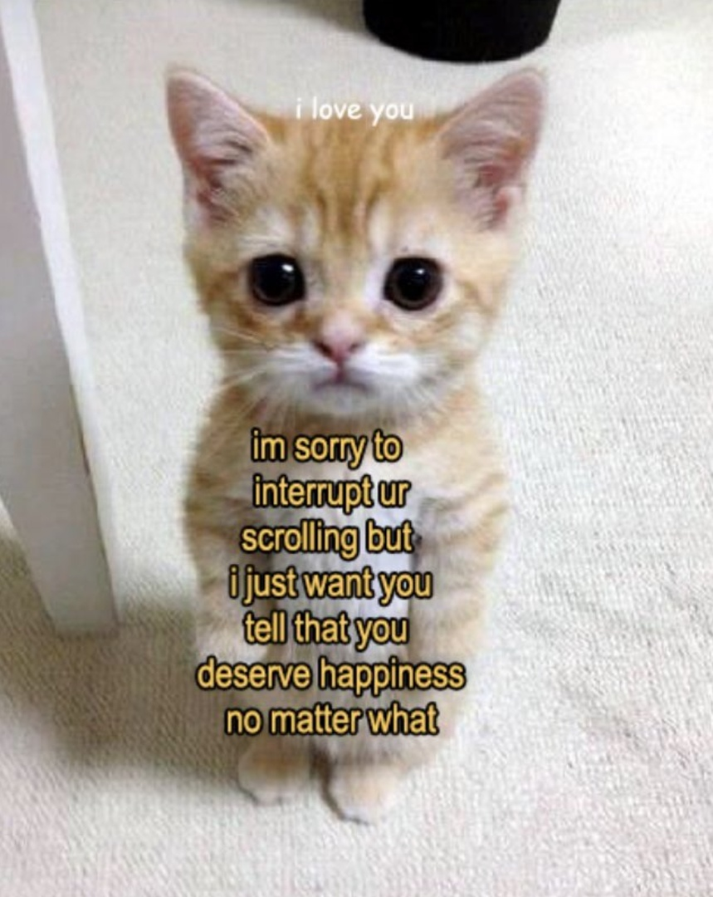

Цифровая грамотность для филологов

В 21 веке умение правильно использовать цифровые технологии действительно важно. Во-первых, с помощью интернета можно получить доступ к любой необходимой информации в считанные секунды: найти первое издание книги, прочесть интересную статью или произведение. Во-вторых, портативные устройства и компьютеры полезны филологу в качестве средств хранения информации, ее набора и сохранения. Таким образом, умение использовать современные технологии играет важную роль для филологов в наши дни.

Зачастую узнавать значение слова или правильность его написания приходится не только филологам. Тогда люди обращаются к интернету, и gramota.ru предоставляет различные словари и полную информацию о слове - из орфографического, толкового словарей, словаря синонимов, антонимов и других. Нельзя не отметить структурированность и удобство поиска. В этом, несомненно, заключаются плюсы сайта. Что касается интерфейса и его минусов, на главной странице слишком много иконок, разделов, рекламы, а также плохо подобранная цветовая гамма, неприятная для человеческого глаза.
вроде все, спасибо за внимание!! (ну правда ведь пастельные цвета это прекрасно) ps ну и мем напоследок
